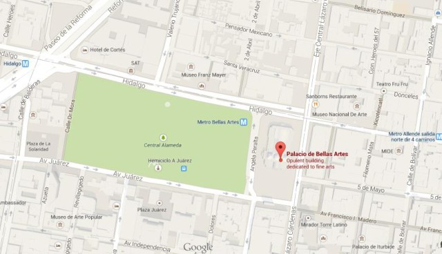

El Palacio de Bellas Artes es uno de los edificios más emblemáticos de la Ciudad de México. Su construcción comenzó en 1904 y fue terminado en 1934. Es conocido por su arquitectura imponente y su interior decorado con murales de algunos de los artistas más famosos de México, como Diego Rivera y David Alfaro Siqueiros.
Además de ser un centro para las bellas artes, este palacio es sede de la Compañía Nacional de Ópera, el Ballet Folklórico de México y numerosas exposiciones de arte. Está situado en el corazón de la ciudad, cerca de otros sitios de interés cultural e histórico.

Palacio de Bellas Artes
Ciudad de México, México
19.4353, -99.1411